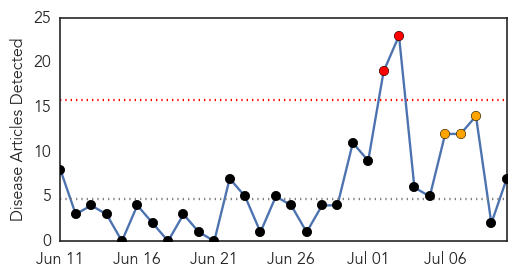
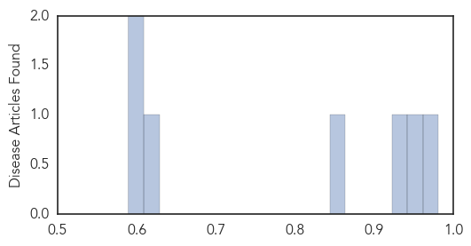
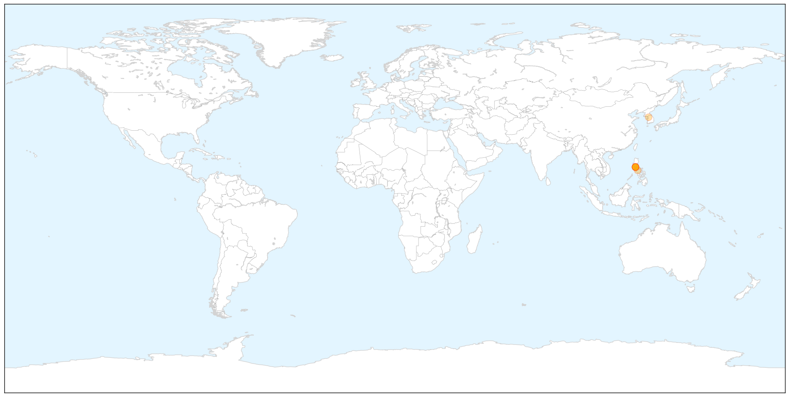

Measles
30-Day Web Trend
2 alerts, 3 warnings

30-Day Twitter Trend
0 alerts, 0 warnings

Article Locations

Article Confidences
Top Articles:
- 0.981
- Study uses genetic code to crack measles outbreak
- 0.943
- Martha's Vineyard Measles Case Was Misidentified; Hospital to Review Protocols
- 0.928
- Sudan Vision Daily
- 0.846
- Harvard Bill of Health Blog Guest Post: Mary Holland On Art Caplan's Vax Crackdowns
- 0.621
- Ahead of Yemen ceasefire, UNICEF sounds alarm about impact of crisis on children
- 0.593
- Amid surging conflict in Yemen, UNICEF mobile teams respond to children’s urgent health needs
- 0.589
- Amid surging conflict in Yemen, UNICEF mobile teams respond to children’s urgent health needs [EN/AR] - Yemen
Top Tweets:
-
No tweets found for Jul 10, 2015
MERS
30-Day Web Trend
0 alerts, 3 warnings

30-Day Twitter Trend
2 alerts, 0 warnings

Article Locations

X

Article Confidences

Top Articles:
- 0.997
- (LEAD) S. Korea reports no new cases of MERS for 5 straight days
- 0.995
- Foreigner from ME now free from MERS-CoV
- 0.995
- Philstar Mobile
- 0.989
- News Scan for Jul 10, 2015
- 0.986
- No more active MERS case in PH - DOH
- 0.986
- MERS patient in Philippines recovers
- 0.975
- (MERS virus) Philippines puts 112 under surveillance
- 0.860
- 112 people monitored for MERS in Philippines
- 0.849
- 112 people monitored for MERS in Philippines - Xinhua
Top Tweets:
-
No tweets found for Jul 10, 2015